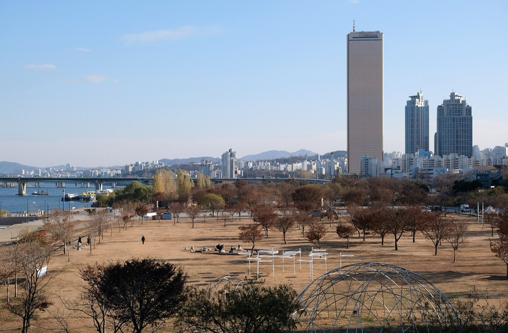
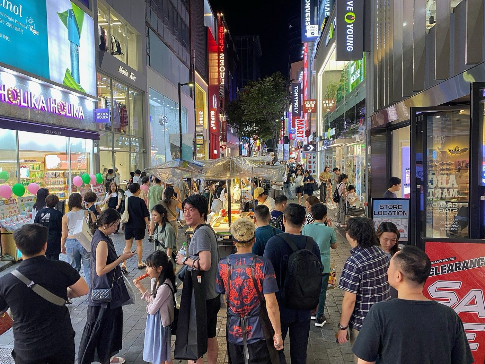
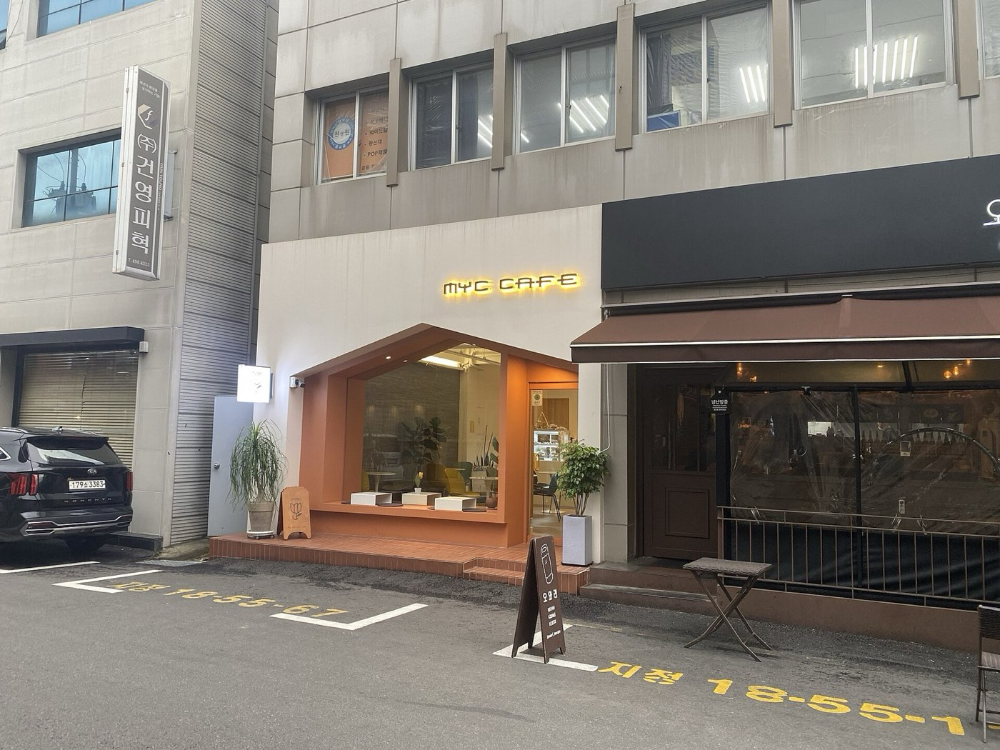
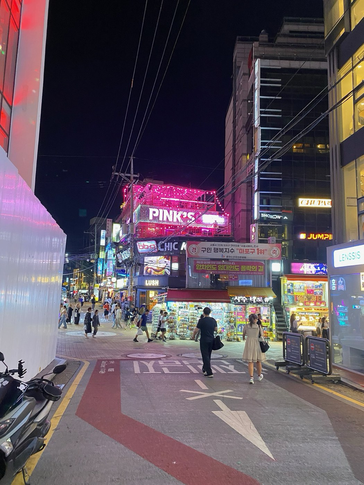
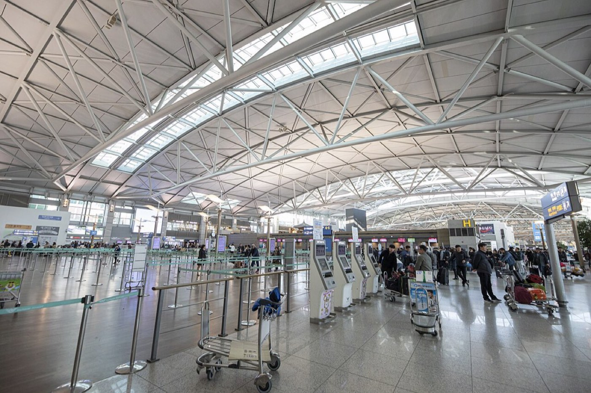

観光スポット
명소最寄り駅・所要時間・料金つき。料金と時間は2026年11月時点の目安なので、行く前に公式情報で確認してください。

夜の漢江で、
コンビニのラーメンを。川辺のコンビニにはラーメン調理機があります。3月の夜は冷えるので、上着を一枚多めに。
グルメ
맛집値段は1人あたりの目安（1,000ウォン≒100〜110円で換算）。3月はまだ寒いので、鍋やスープがよく合います。
買い物・お土産
쇼핑実用情報
여행 정보空港からの移動、お金、通信、トラブル時の連絡先まで。
旅の韓国語
한국어赤字の読み方をそのまま言えば通じます。
6日間のモデルプラン
일정移動が少なくなるように、1日1〜2エリアにまとめています。
DAY1到着
仁川空港 → 宿 → 明洞の夜
- 空港鉄道でソウル駅か弘大入口へ（約45〜60分）
- 宿に荷物を置いて、WOWPASSとT-moneyを準備
- 明洞の屋台で食べ歩き → サムギョプサル

DAY2王宮
韓服で景福宮 → 北村 → 益善洞 → 仁寺洞
- 9時台に韓服を借りる（2時間ほど）
- 景福宮で撮影、10時か14時の守門将交代式
- 北村韓屋村 → 益善洞のカフェ → 仁寺洞で伝統雑貨
- 夜は清渓川を散歩
DAY3トレンド
聖水洞 → ソウルの森 → 東大門
- 聖水洞でカフェとポップアップ巡り
- となりのソウルの森を散歩
- 夜は東大門でタッカンマリ → DDPのライトアップ

DAY4西側
望遠市場 → 延南洞 → 弘大 → 夜の漢江
- 望遠市場でつまみ食いランチ
- 京義線森の道を歩いて延南洞のカフェへ
- 弘大で古着と人生4カット
- 夜は汝矣島の漢江公園でラーメン

DAY5市場と夜景
広蔵市場 → 江南（COEX）→ 南山タワー
- 昼は広蔵市場でピンデトッとユッケ
- COEXの星の広場図書館と奉恩寺
- 最後の夜はケーブルカーで南山タワーへ
DAY6帰国
お土産 → 仁川空港 → 新千歳
- ソウル駅のロッテマートでお土産をまとめ買い
- 出発の3時間前には空港へ
- 帰りのキャリーの重さに注意

地図と予算
지도 · 예산ざっくり位置関係
2人分の予算（3月想定）
約25〜30万円1人 12.5〜15万円
新千歳→仁川の往復は3月で1人約4.2〜5.5万円（税・燃油込み、2026年11月の検索）。LCCは預け荷物が別料金のことが多いので、キャリー2個分を足した総額で比べます。
持ち物チェック
준비물チェックはこのブラウザにだけ保存されます。